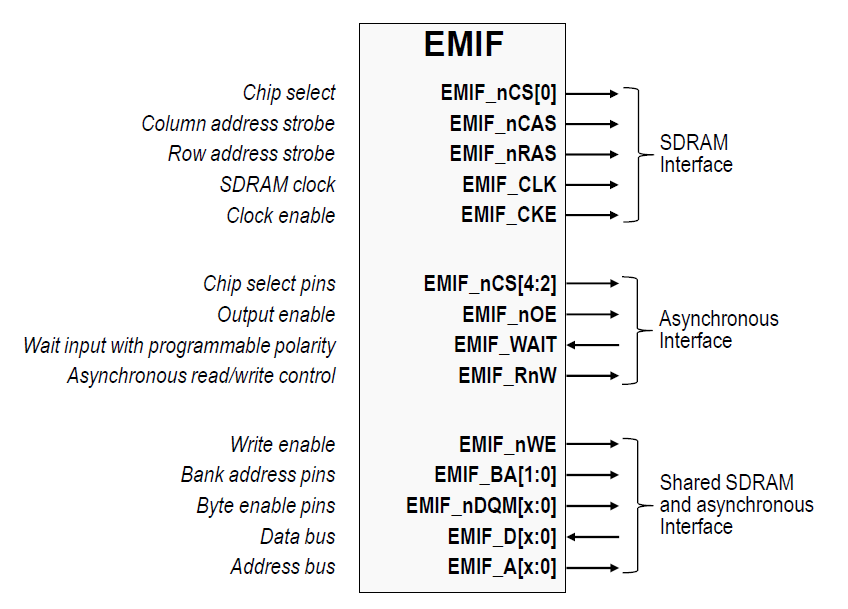

External Memory Interface (EMIF)#
Introduction#
When an application requires more memory than what is available on-chip, the EMIF controller can be used to connect to external memory devices. It provides a means for the CPUs and RTDMA modules to connect to synchronous (SDRAM) and asynchronous (SRAM, NOR Flash) memories. EMIF can also be used to interface with FPGAs. Note that EMIF is a different peripheral compared to EPI and XINTF that are featured on some older C2000 devices.
Overview of EMIF#
Different sources within a device can make requests to the EMIF to access memory. The EMIF is in charge of processing this requests and performing arbitration to ensure that memory is safely accessed by the source. If a request is submitted from two or more sources simultaneously, the EMIF is able to give access to the highest priority request first. Upon completion of a request, pending requests can be evaluated so the next highest priority pending request is processed.
The controller arbitration block in the EMIF always allows read access from any source. But for write access (or execute access), the controller arbitration block arbitrates between the accesses from different sources as described above used a round robin priority scheme.
EMIF features#
Accessible by all CPUs, RTDMA1, and RTDMA2
Fast port access from primary CPU, slow port access from other CPUs and RTDMA
RTDMA burst support
Separate buffer module for each CPU with a write FIFO that contains up to 4 entries
EMIF splits accesses based on data size: 64-bit access causes two 32-bit accesses
Arbitration for same and different initiators
Chip Select support:
Single chip select for SDRAM
Three chip selects for ASRAM
An additional chip select range for EMIF register accesses
An example functional digram is shown below:

The EMIF is compatible with industry standard memory devices which support either asynchronous or synchronous memory interfaces
Asynchronous (SRAM and NOR Flash) Memory Support#
The EMIF supports asynchronous memories:
SRAMs
NOR Flash memories
There is an external wait input that allows slower asynchronous memories to extend the memory access. The EMIF module supports up to three chip selects ( EMIF_CS[4:2]). Each chip select has the following individually programmable attributes:
Data bus width
Read cycle timings: setup, hold, strobe
Write cycle timings: setup, hold, strobe
Bus turnaround time
Extended wait option with programmable time-out
Select strobe option
Synchronous (SDRAM) Memory Support#
The EMIF memory controller is compliant with the JESD21-C SDR SDRAMs that use a 32-bit or 16-bit data bus. The EMIF has a single SDRAM chip select ( EMIF_CS[0]).
The EMIF module supports 16-bit/32-bit SDRAM in addition to the asynchronous memories. SDRAM configurations supported are: • One-bank, two-bank, and four-bank SDRAM devices • Devices with 8-, 9-, 10-, and 11-column addresses • CAS latency of two or three clock cycles • 16-bit/32-bit data bus width • 3.3-V LVCMOS interface
Additionally, the EMIF supports placing the SDRAM in self-refresh and power-down modes. Self-refresh mode allows the SDRAM to be put in a low-power state while still retaining memory contents because the SDRAM will continue to refresh itself even without clocks from the microcontroller. Power-down mode achieves even lower power, except the microcontroller must periodically wake up and issue refreshes if data retention is required. The EMIF module does not support mobile SDRAM devices
EMIF Subsystem (EMIFSS)#
When multiple CPUs and modules on the device access memory, we need a systematic way of organizing access.
The EMIFSS is used by memory access initiators to support access to the EMIF peripheral.
There are different speed ports (fast and slow), with different initiators connected to the fast and slow access ports.
Fast access ports are limited to the primary CPU. Slow access ports take an additional cycle for accesses, but have mechanisms to improve throughput for certain scenarios like RTDMA accesses. Debug accesses are connected to slow access ports and are arbitrated externally from the EMIFSS. The round-robin arbitration scheme is used among all fast and slow access ports such as seen in the F29H85x device:
CPU1 (default)
CPU2
CPU3
RTDMA1
RTDMA2
Debug Bridge
Buffer Module#
A buffer module is present on each CPU and contains:
A dataline buffer that services the data read 1/2 accesses (DR1/DR2)
A write FIFO that services the data write accesses (DW)
Associated logic to conditionally bypass the dataline buffer
Performance#
The EMIFSS also allows for performance improvement within C29x devices in comparison to EMIF on C28x devices. EMIFSS reduces the number of cycles required for memory access/read/write by the CPU and RTDMA in both SDRAM and ASRAM. Information regarding performance specifications can be found in your device specific documentation.